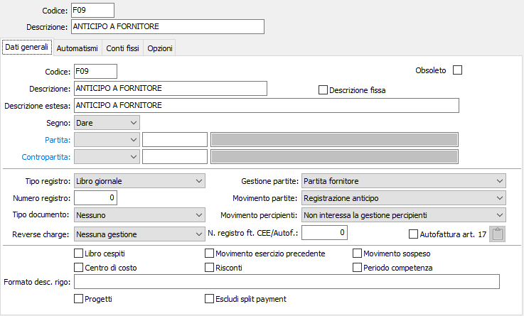
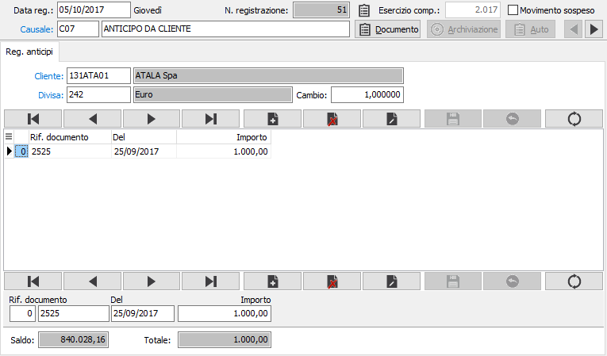
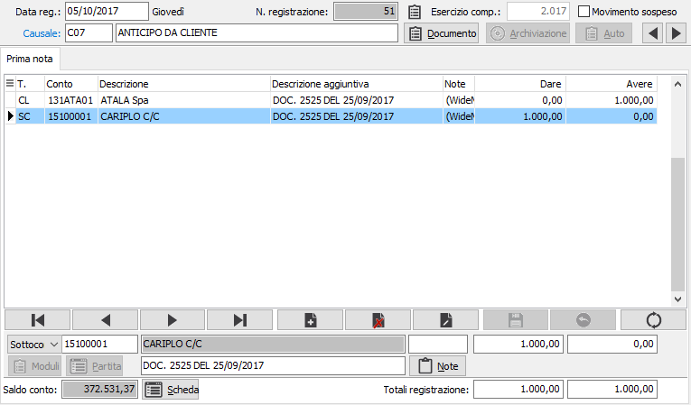

Registrazione anticipi
Anche nel caso di registrazione di anticipi di clienti o a fornitori occorre utilizzare una apposita causale contabile in grado di attivare correttamente le partite aperte. È appena il caso di ricordare che si può parlare di anticipo quando la/le fatture a cui si riferisce non sono ancora state registrate; in caso contrario, si procederà ad un pagamento o ad un incasso.

Confermando la causale contabile, appare la finestra video di Registrazione anticipi ed il cursore si posiziona sul campo Serie documento del pannello di input.

SERIE DOCUMENTO: eventuale numero della serie (registro sezionale Iva) a cui è assegnato il documento. supposto che l'utente conosca già gli estremi del documento a cui si riferisce l'anticipo.
NUMERO DOCUMENTO: eventuale numero del documento; supposto che l'utente conosca già gli estremi del documento a cui si riferisce l'anticipo.
DATA DOCUMENTO: data del documento; supposto che l'utente conosca già gli estremi del documento a cui si riferisce l'anticipo.
IMPORTO: campo obbligatorio per inserire l'importo dell'anticipo.
È possibile registrare anticipi di clienti diversi nell'ambito della stessa registrazione, utilizzando i tasti funzione sul campo Importo. È possibile registrare anticipi di clienti diversi nell'ambito della stessa registrazione, utilizzando i tasti funzione F12 sul campo Importo.
Dalla finestra video Registrazione anticipi, il programma passa alla finestra video Prima Nota tramite il tasto Pagina giù. Il cursore è posizionato sul campo codice sottoconto affinché l'utente possa definire il sottoconto di contropartita.
